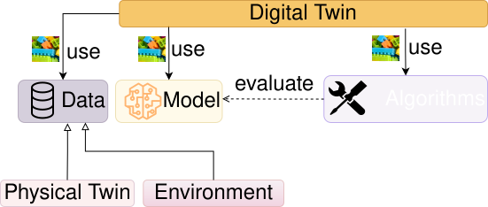
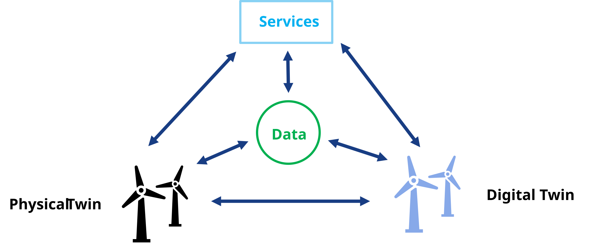

Digital Twins: A Beginner's Tutorial
Disclaimer: This tutorial was generated using an LLM, with fact-checking done by Prasad Talasila, who works in this research area. Despite some potential for hallucination, the ideas communicated in this tutorial are intended to be accurate. Please send corrections and suggestions to prasad.talasila@gmail.com
Summary. A digital twin links a physical system to a virtual model through a continuous, two-way flow of data. This tutorial defines the idea and its many types, surveys the data, models, algorithms, and architectures that build one, explains the standards that let twins interoperate, works through four case studies spanning wind turbines, bridges, and aircraft, and closes with the technical, security, and workforce challenges left unresolved.
Outline
- Digital Twins: A Beginner's Tutorial
- Outline
- 1. Motivation
- 2. What Is a Digital Twin, Really?
- 3. The Building Blocks: Data, Model, and Algorithms
- 4. Why Standards Matter: Industry 4.0, AAS, and Friends
- 5. Case Studies
- 6. Challenges and Open Issues
- References
1. Motivation
Picture a wind turbine floating far out at sea. You can't just walk up and peer inside it every time something feels off -- a maintenance visit means a boat, a crew, and a very expensive afternoon. So the National Renewable Energy Laboratory and Stiesdal Offshore built something cleverer instead: a live computer model wired to the real turbine's sensors, checked against a full-scale prototype, that estimates loads and stresses the physical sensors alone can't see [@branlard_digital_2024]. That's a digital twin -- and once you notice the pattern, you start seeing it everywhere. At the University of Oslo, the BedreFlyt project runs a digital twin of a hospital ward to simulate patient flow, so planners can spot a bed shortage days before it happens instead of scrambling on the day [@sieve_bedreflyt_2025]. In Extremadura, Spain, engineers built one for a high-speed railway bridge, updating it live during load tests so raw sensor readings turn into a structural model that corrects itself as the data comes in [@chacon_digital_2024]. Different industries, same trick: take a physical thing, give it a virtual counterpart wired to live data, and let the two talk to each other. Sections 3 and 5 come back to the wind turbine and the bridge in much more detail, once you have the vocabulary to talk about what's actually inside them.
2. What Is a Digital Twin, Really?
Here's a tempting but wrong definition: "a digital twin is a 3D model of something real." A 3D model is just a passive abstraction -- it doesn't know or care what the real object is doing right now. Here's a definition closer to the truth, from the paper that coined the term: a digital twin is a virtual object connected to its physical counterpart by a continuous flow of data in both directions -- sensor readings flow in from the physical side, and decisions computed on the virtual side flow back out to actually change something in the real world [@grieves_digital_2017].
That two-way flow is the whole trick, and there's a quick way to test for it: if data only flows one way -- physical object to model, full stop -- what you have is merely a digital shadow. Only when the loop closes, and the model's output changes the physical object's behavior automatically, do you get a real digital twin [@kritzinger_digital_2018]. In practice, many papers use "digital twin" more broadly for human-in-the-loop or advisory systems; this tutorial keeps the stricter definition for clarity, while treating shadow-to-twin systems as a maturity continuum.
"Digital twin" is not the only name this idea goes by, and the name arrived well after the idea. Grieves sketched the concept in a 2002 University of Michigan presentation, then taught it in that university's first product lifecycle management courses in early 2003 -- under a different name, the Mirrored Spaces Model. The term "digital twin" was attached to it only years later [@grieves_digital_2017]. Meanwhile industries that needed something like it built it under names of their own: a computational megamodel, a device shadow, a mirrored system, an avatar, or a synchronized virtual prototype. Several of the earliest systems matching the pattern predate the term entirely. Logs of patient health history, online operation monitoring of process plants, traffic and logistics management, weather forecasting driven by dynamic data assimilation, remote monitoring of satellites, and real-time detection of leaks in oil and water pipelines all qualify in hindsight, though none of their builders would have used the word [@rasheed_digital_2020].
The lesson for a beginner is to hold the word loosely. What matters is the pattern -- physical asset, virtual model, closed two-way loop. That pattern recurs under many names, across many industries and decades.
Two examples make the loop concrete. One incubator case study, built specifically to teach this idea, walks through a controller model that reads a real incubator's live temperature sensor, computes a new heater setting, and pushes that setting back to the real heater, no human in the loop [@gomes_digital_2025]. The offshore wind turbine from Section 1 closes the same loop at industrial scale: sensor data streams in continuously, and the twin's estimates feed back into the turbine's own control system [@branlard_digital_2024]. Different scales, same handshake.

It helps to see that two-way loop drawn as software instead of just described in prose. On the physical side sits a logical physical twin: the physical asset itself, plus whatever firmware already reads its sensors and drives its actuators. Plenty of real assets have neither, in which case an add-on firmware card -- an Arduino or Raspberry Pi board is a common, cheap choice -- gets bolted on to bridge the gap. An edge device sits between that logical physical twin and everything else, carrying sense data one way and control commands back the other -- the same closed loop this section keeps insisting on, just drawn as boxes and arrows instead of prose. The digital twin itself turns out to be nothing exotic: ordinary software running on an ordinary operating system on an ordinary computer, distinguished from any other program only by that wire back to a real object. Whatever the twin computes gets handed up to services sitting on top of it, and that's the layer a person, or another piece of software, actually touches -- a structural-health alert, a maintenance recommendation, a what-if simulation result [@talasila_digital_2026].
2.1 Types and Maturity of Digital Twins
Kritzinger's twin/shadow/model split from above isn't the only way researchers have sliced up the concept. Grieves and Vickers, who coined the term, split digital twins by what they're for: a predictive digital twin forecasts how the physical asset will behave next, while an interrogative digital twin is simply queried for the asset's current status, no forecasting involved. A separate, complementary split looks at what part of the lifecycle the twin focuses on: a product digital twin prototypes and validates a design before it's built; a production digital twin validates the manufacturing process itself, ahead of and during actual production; and a performance digital twin tracks the finished product and process together during operation, feeding what it learns back into the next design cycle [@iliuta_digital_2024].
Scale is a third axis, and it's the same one Section 3.5 comes back to when discussing digital twin architecture: a unit-level twin models a single component; a system-level twin is a collaboration of several unit-level twins representing one larger machine; and a system-of-systems twin connects multiple system-level twins together, spanning the asset's entire life cycle [@iliuta_digital_2024]. The wind turbine from Section 1 is a system-level twin built from unit-level pieces (the tower, the rotor); a whole wind farm's digital twin, coordinating many turbines together, would be the system-of-systems level above it.
None of this happens at once. Several proposed maturity ladders describe how a digital twin typically grows more capable over time. One ladder tracks how much of the twin exists and how it behaves: a partial digital twin starts with just a few tracked parameters (say, temperature and pressure) used to prove out basic connectivity; a digital twin clone adds a fuller, data-backed replica of the product; an augmented digital twin starts correlating current data against historical data to draw conclusions the clone alone couldn't. A second, independent ladder tracks how autonomous the twin is: a pre-digital twin exists before the physical asset does, informing early design decisions; a plain digital twin exchanges data with the built asset in both directions; an adaptive digital twin starts learning operator preferences and makes real-time decisions using supervised machine learning; and an intelligent digital twin goes further still, using unsupervised learning to raise its own accuracy and autonomy without being told what to look for [@iliuta_digital_2024]. A beginner building a first digital twin project is almost always building a partial, pre-digital-twin-stage system -- and that's fine; nobody starts at "intelligent."
2.2 Why Build One? Uses and Benefits
Why go to the trouble? The AIAA and the Aerospace Industries Association's joint position paper on digital twins puts it plainly: the value of a digital twin comes from moving work out of the expensive, slow physical world and into a cheap, fast virtual one, then feeding the results back to actually change what happens physically. That value shows up differently depending on what stage of a product's life the twin is watching. A digital twin can shadow a product through its entire life cycle: the "as designed" phase, where a virtual prototype is analyzed and refined before a single physical part is cut; the "as built" phase, where a twin of the actual manufacturing process helps catch defects and optimize throughput; and the "as used" and "as maintained" phases, where a twin of the operating asset tracks wear, predicts failures, and extends service life. Whatever question the twin is being asked to answer, its output usually falls into one of four buckets: descriptive (what is happening right now), diagnostic (why did it happen), predictive (what will happen next), or prescriptive (what should be done about it) [@noauthor_digital_nodate-1].
Concrete applications range far wider than the wind-turbine-and-bridge examples in Section 1 might suggest. On the aerospace side, a digital twin of a single material coupon can combine physics models, physical experiments, and machine learning to characterize how a material behaves under uncertainty, while a digital twin of a flight-test vehicle -- including the individual test pilot's characteristics -- can be used to plan test flights that extract the most engineering knowledge per flight hour [@noauthor_digital_nodate-1].
A survey of digital twins across many fields shows the same pattern spreading much further. In medicine, an organ-on-a-chip studies how different drugs affect human tissue, substituting a digital twin for the human test subject to obtain the same information; combining several such chips yields a body-on-a-chip overview of the whole organism. Neural networks trained on electrocardiogram (ECG) data can classify heart rhythms and diagnose circulatory pathologies -- the same machine-learning family from Section 3.2. Emotion-recognition twins built from webcam images have been proposed to detect stress and depression early, so medication can be given in advance of a crisis. In automotive manufacturing, a digital twin of a bodywork production line can check whether production can proceed according to plan, test the line's adaptability to abnormal scenarios, and evaluate proposed changes to product ordering. At city scale, a smart-city twin integrates Building Information Modeling (BIM) with Geographic Information System (GIS) data: GIS supplies the city's geospatial context, BIM the detailed engineering models, and the pair together supports sustainable urban design [@iliuta_digital_2024].
BIM appears twice in this tutorial for unrelated reasons: once as the IFC format carrying a single bridge's geometry (Section 5.2), and once as half of an entire city's digital twin. That overlap is worth noting. "Standards for digital twins" (Section 4) and "standards a digital twin project inherits from its own industry" are not separate categories in practice.
Zoom out from individual examples and a survey of industrial IoT digital twins reports the same handful of use cases recurring across almost every deployment it studied: smart manufacturing, product design, supply-chain management, predictive maintenance, and remote diagnosis [@xu_survey_2023]. None of those five is exotic on its own, and that's rather the point -- most real digital twin projects aren't chasing a novel application so much as applying the same physical-asset-plus-virtual-model pattern to whichever of these ordinary, recurring business problems is costing the most money to solve the old way.
That breadth is itself the point. A digital twin isn't a single off-the-shelf product; it's a pattern -- physical asset, virtual model, two-way data flow -- that keeps turning out to be useful nearly everywhere someone is willing to invest in building the virtual half.
3. The Building Blocks: Data, Model, and Algorithms
Zoom in on that loop from Section 2 and you'll find it isn't one thing -- it's three things, stitched together. Every digital twin worth the name needs to move data, run it through a model, and let some algorithm decide what to do with the result. That same three-part shape holds together whether you're twinning a wind turbine or a hospital ward. The rest of this section takes each piece in turn.

The picture is deliberately spare: a physical twin feeds a digital twin, and the digital twin in turn uses data, a model, and algorithms, all of which get evaluated against a shared environment rather than in a vacuum. That word "uses" is doing real work. A platform paper describing how digital twins get built out of reusable pieces makes the same point more formally: only an algorithm (that paper splits it into a function asset and a tool asset) is allowed to use a model or a piece of data -- data and models never invoke each other directly -- and a specific combination of the three is what turns a pile of reusable assets into one concrete digital twin rather than another [@talasila_composable_2025]. This tutorial folds that paper's separate function and tool categories into the single label algorithms, introduced properly in Section 3.3, purely to keep the vocabulary from multiplying past what a beginner needs to track.
3.1 Data
Data is the raw material: the temperature readings, vibration spectra, and bed-occupancy counts flowing in from the physical side. But "data" is not one thing, and the shape it takes changes what you can do with it. Some of it is structured -- a clean row of numbers with a known meaning, like a rotor-speed reading tagged with a timestamp. Some of it is semi-structured or unstructured -- a maintenance technician's free-text note, a photo of a cracked weld, a video clip from an inspection drone -- and needs real interpretation before any model can use it at all. There's also a split in how the data arrives: some pipelines process it in batches, collecting a large chunk and crunching through it all at once, while others are built for time-series or streaming data, where new readings show up continuously and have to be handled a little at a time, in something close to real time [@xu_survey_2023].
That streaming data has to get from the physical sensor to wherever the twin actually lives, and that's a communication problem, not just a data problem -- which is where the digital twin world runs straight into the wider Internet of Things (IoT) ecosystem. Two surveys already sitting in this project's bibliography map that overlap in useful detail. One traces how digital twins for the Industrial Internet of Things lean on open-source streaming tools such as Apache Kafka and Apache Spark to move batch and time-series data around once it arrives [@xu_survey_2023]. The other catalogs the communication protocols that actually carry the bytes before that: MQTT and CoAP for lightweight publish/subscribe messaging between small, low-power devices, HTTP and HTTPS where a heavier request/response exchange is acceptable, and LoRaWAN where the sensor is far away and battery life matters more than bandwidth [@hakiri_comprehensive_2024]. None of these protocols is "the" protocol for digital twins; picking one is mostly a question of how much power, bandwidth, and latency the physical side of the twin can spare, and real deployments often mix several -- MQTT from a nearby gauge, LoRaWAN from a remote one, all landing in the same streaming pipeline.
Whichever protocol gets the bytes there, raw sensor data is almost never usable straight off the wire. A temperature sensor might report in Fahrenheit when the model expects Celsius; a vibration sensor might spit out noisy readings that need filtering before anything downstream can trust them; a firehose of per-second measurements might need batching into slightly larger chunks before a model can digest them efficiently. None of that cleanup logic is specific to any one digital twin; a unit-conversion routine works the same whether it cleans turbine data or hospital data. So these small, unglamorous routines tend to get written once and reused across many twins, usually through off-the-shelf tool chains built for exactly this kind of heavy lifting rather than hand-rolled per project [@talasila_realising_2024]. It's easy to skip past this step when you're first learning about digital twins, since "data cleanup" sounds far less interesting than "physics simulation" -- but a beautifully built model fed garbage data will confidently produce garbage output, so in practice this unglamorous layer is where a lot of a real digital twin project's engineering time actually goes.
Once data is flowing, it typically passes through a layered software stack rather than going straight from sensor to model. One widely used framework for industrial IoT platforms splits the stack into four layers: a data layer that represents the different sources and enterprise systems feeding the twin; an integration layer that dispatches well-formed information to the rest of the stack; a service layer that chains services together and manages the twins themselves; and a business layer that connects the whole pipeline to the actual business logic driving decisions [@minerva_digital_2020]. Two further data problems are easy to overlook until they bite. The first is data fusion: merging readings from sensors that measure overlapping or complementary things into one consistent picture rather than several disagreeing ones. The second is data security. A twin that faithfully mirrors a physical asset also faithfully mirrors an attack surface, and tampering with the data feeding a twin -- or with the twin's stored history -- corrupts every decision made downstream of it [@wu_comprehensive_2023].
Not all of a twin's data comes from the same place, either. It's useful to separate static modeling data (the asset's fixed design parameters), dynamic interaction data (live sensor readings that change moment to moment), and service knowledge data (accumulated know-how about how to interpret the first two) [@wu_comprehensive_2023]. Sensors themselves can also fail or go missing, and a surprisingly common fix borrows the digital twin idea recursively: train a machine-learning model to act as a virtual sensor, estimating what a broken or absent physical sensor would have reported, using the other, still-working sensors and the twin's own model as context [@wu_comprehensive_2023]. Taken far enough, the same trick -- a digital twin of the sensing device itself, compensating for gaps in the very data the main digital twin depends on -- shows up as its own small, nested digital twin problem sitting inside the larger one.
3.2 Models
The model is where the twin actually knows something about the physical world. There isn't just one kind, though, and the literature on digital twins tends to sort them into a small number of recurring families.
Physics-based models start from known physical laws -- structural mechanics, fluid dynamics, the equations describing how a solid bends or a fluid flows -- and simulate them directly. A finite element model of a beam bending under load, or a computational-fluid-dynamics model of airflow around a wing, are typical examples. The trade-off is always fidelity against computational cost. A model detailed enough to capture every bolt and weld is far too expensive to run in real time. Practical digital twins therefore use a deliberately lower-fidelity physics-based model, accepting a small, quantified loss of accuracy in exchange for one that keeps up with live sensor data [@thelen_comprehensive_2022].
Statistical models take a different approach: instead of encoding physical laws, they fit a mathematical structure -- an autoregressive model, a stochastic process -- directly to measured data, without necessarily explaining why the system behaves that way. They show up twice in digital twins: identifying a dynamic system's behavior from sensor measurements (a task called system identification), and modeling how a physical asset degrades over time to support predictive maintenance. In both cases the appeal is the same: statistical models tend to need far less computation than a detailed physics-based simulation, at the cost of not really explaining why the numbers come out the way they do [@thelen_comprehensive_2022].
Machine-learning (data-driven) models go a step further and let a general-purpose learning algorithm find the pattern in the data itself, with no assumption about its mathematical form at all. These range from comparatively simple methods, like random forests and Gaussian process regression, to deep neural networks -- convolutional networks, LSTMs -- trained on large amounts of sensor data. They earn their keep precisely where physics-based modeling struggles: when the underlying physics is poorly understood, or well understood but too expensive to simulate at the speed a digital twin needs. The price is data -- a machine-learning model is only as good as the examples it was trained on, and it can fail badly on situations that look nothing like anything it has seen before [@thelen_comprehensive_2022].
Hybrid models try to get the best of both worlds by combining a physics-based model with a data-driven one. One common approach trains a neural network with a loss function that penalizes any prediction violating a known physical law; another runs a physics-based simulation purely to generate extra training examples for a machine-learning model that would otherwise not have enough real data. The result generalizes better than pure machine learning while staying far cheaper to run than a full physics-based simulation -- essentially borrowing the physics model's ability to stay sensible outside the training data, and the data-driven model's ability to run fast [@thelen_comprehensive_2022].
| Model type | What it's built from | Typical use in a digital twin |
|---|---|---|
| Physics-based | Known physical laws (structural, thermal, fluid equations) | Simulating a system's behavior directly from first principles [@thelen_comprehensive_2022] |
| Statistical | A mathematical structure fitted to measured data | Identifying dynamic system behavior; modeling long-term degradation [@thelen_comprehensive_2022] |
| Machine-learning | A general-purpose learning algorithm trained on data | Capturing patterns too complex, or too expensive, to simulate from physics alone [@thelen_comprehensive_2022] |
| Hybrid | A physics-based model combined with a data-driven one | Improving generalization over pure ML while staying cheaper than full physics-based simulation [@thelen_comprehensive_2022] |
Choosing among these four families is itself a design decision, not something forced by the physics alone: A digital twin can be modeled with first-principles heat-transfer equations, with a data-driven regression fit to logged temperatures, or with a hybrid of both, and picking one over another trades off precision, development cost, and how well the result generalizes to conditions the model has never seen [@abbiati_modelling_2024]. Whichever family is chosen, a model built once and never touched again will slowly drift from the real asset it's supposed to represent -- through wear, repairs, or simply conditions the original model never anticipated -- so a production digital twin needs a plan for updating its model over time. That may mean periodically retraining a machine-learning model on fresh data, or using one of the state-estimation methods in Section 3.3 to nudge a physics-based model's internal state back toward what the sensors report [@wu_comprehensive_2023].
3.3 Algorithms
A model by itself doesn't do anything; it just sits there providing simplified abstraction of a physical system. Something has to actually run the numbers, and that something is what the literature -- depending on which paper you're reading -- calls an algorithm, a tool, or a method. All three names point at the same idea: a software implementation of a domain-specific procedure that takes a model and some data and evaluates it [@talasila_realising_2024]. Each model type from Section 3.2 tends to come with its own family of algorithms built specifically to evaluate it.
For a physics-based model, the workhorse algorithm is a numerical solver: finite element analysis (FEA) for structural stress and strain, or computational fluid dynamics (CFD) for thermal and airflow problems, each breaking the object into a mesh and solving the governing equations at every point in it. The finer the mesh, the more accurate the result -- and the longer the solver takes to run, which is the same fidelity/cost trade-off from Section 3.2 showing up again, now as a runtime cost instead of a modeling choice [@thelen_comprehensive_2022].
For a statistical model, a common algorithm family is system identification -- methods like the nonlinear autoregressive exogenous (NARX) model or stochastic subspace identification (SSI), which fit a mathematical structure to sequences of sensor measurements. A closely related algorithm, the Kalman filter, estimates a system's current internal state from noisy measurements by continuously blending a model's prediction with each new sensor reading as it arrives -- neither trusting the model blindly nor the noisy sensor blindly, but combining the two in proportion to how much each is trusted at that moment [@thelen_comprehensive_2022].
For a machine-learning model, the algorithm is a training procedure -- backpropagation for a neural network, or a kernel-fitting procedure for Gaussian process regression -- that adjusts the model's internal parameters until its predictions match a set of training examples closely enough. In many deployments, the model is initially trained offline before the twin goes live; what runs inside the twin in real time is usually the already-trained model doing fast inference, not the full training procedure itself. In long-lived systems, retraining can still happen periodically or continuously as new data accumulates [@thelen_comprehensive_2022; @wu_comprehensive_2023].
For a hybrid model, the algorithm has to coordinate both halves at once: a physics-informed loss function trains a neural network while penalizing any prediction that violates a known physical law, or a delta-learning procedure trains a machine-learning model specifically to learn the discrepancy left over by a simplified physics-based model. Both are ways of dividing the same labor: let the physics-based half handle what's already well understood, and let the data-driven half absorb whatever the physics-based model gets wrong [@thelen_comprehensive_2022].
Not every machine-learning algorithm trades away interpretability for accuracy, either. Optimal classification trees are a good example: a more recent, exact optimization approach to building decision trees, has been used to predict damage to aircraft blades [@kapteyn_toward_2020]. That combination -- competitive accuracy without giving up the ability to explain why the algorithm decided what it decided -- matters more in a digital twin context than in most machine-learning applications, since a twin's output often feeds directly into a real-world safety decision, and Section 5.4 shows exactly that algorithm at work.
Put the three pieces together and you get the whole loop from Section 2 back again: data flows in, an algorithm evaluates it against a model, and the result flows back out to the physical twin. Change any one piece -- swap in a better model, plug in a faster algorithm, or feed it richer data -- and the twin improves without touching the other two pieces at all. That's the entire point of treating data, models, and algorithms as separate, swappable building blocks instead of one big tangled program -- and Section 5 will show exactly which blocks the wind turbine and the railway bridge from Section 1 actually used.
3.4 Combining Models: Co-Simulation and Hybrid Systems
Section 3.2's four model families are rarely used in isolation on anything beyond a toy example. A real asset usually needs several models built by different specialists, in different formalisms, for different sub-systems -- a finite element model of a beam from a structural engineer, a statechart describing a controller's logic from a software engineer -- and at some point those separately built models have to be coupled together into one working digital twin [@abbiati_modelling_2024].
Co-simulation is the most common way to do that coupling without forcing everyone onto the same tool. Instead of rewriting every sub-model in one shared modeling language, each sub-model keeps its own internal implementation private and exposes only a small, standardized interface -- typically three functions: one to read a variable's current value, one to set it, and one to advance the simulation by a short time step [@abbiati_modelling_2024]. The most widely adopted standard for this interface is the Functional Mock-up Interface (FMI), maintained by the Modelica Association and supported by more than 140 modeling and simulation tools, including Simulink, Dymola, OpenModelica, and 20-sim; a model packaged to this standard is called a Functional Mock-up Unit (FMU) [@abbiati_modelling_2024]. Co-simulation lets a structural engineer's finite-element model and a controls engineer's statechart be combined into one digital twin without either engineer needing to learn the other's tool, or disclose the proprietary internals of their own.
Not every combination problem is solved by wrapping separate tools, though. Some systems are inherently hybrid: they mix genuinely continuous behavior (a temperature drifting smoothly) with genuinely discrete behavior (a thermostat switching a heater on or off) within a single sub-system, not across two separately built ones.
The incubator mentioned in Section 2 is a case in point, and it is worth describing concretely, since one modelling text uses it as a running example throughout. The device is a Styrofoam box fitted with an electric heater, a fan, and two temperature sensors, holding its contents at a controlled temperature anywhere between 20 and 60 °C. Its controller reads those temperature measurements and decides whether to switch the heater on or off; the heater in turn injects thermal power into the air enclosed by the box, raising its temperature [@abbiati_modelling_2024].
Heat transfer inside the box is continuous physics, while the controller deciding when to switch the heater is a discrete state machine. Neither description alone is enough. A hybrid automaton captures both at once: the system moves between a small number of discrete modes (heater on, heater off), and within each mode its continuous state evolves according to a set of differential equations that apply only in that mode; crossing a threshold triggers a discrete transition to a different mode with different equations [@abbiati_modelling_2024]. Co-simulation coordinates separate models across a shared interface. A hybrid automaton, by contrast, describes one system that has both kinds of behavior built in. Which formalism fits depends on whether a system's continuous and discrete parts were built by different people using different tools, or were always one integrated whole.
3.5 Architecture: Putting the Blocks Together
Data, models, and algorithms are the ingredients; architecture is the recipe for how they're arranged into a working system, and -- much like the standards in Section 4 -- different research groups have converged on genuinely different answers.
One influential proposal extends Grieves' original three-part sketch (a physical entity, a virtual entity, and a connection between them) into a five-dimension model: physical entity, virtual entity, connection, digital twin data (the twin's own accumulated data, distinct from live sensor readings), and services (the functions -- simulation, prediction, decision support -- that the twin exposes to the humans and software around it) [@tao_five-dimension_2019-1].
A second proposal, aimed specifically at industrial IoT deployments, arranges a twin into three layers instead of five: a virtual asset layer holding the data, models, and virtual entities that make up the twin's fundamental components; a real-time "3C" layer (computation, communication, and control) that actually runs the twin's processes in sync with the physical system; and a visualization and human-machine-interface layer on top, for the people who need to assess and interact with the twin [@xu_survey_2023]. Where Tao's five-dimension model is organized around what a twin contains, this layering model is organized around what a twin does at runtime -- collect, compute, communicate, and display -- and the same physical asset could reasonably be described with either vocabulary.
A third view, closer to Section 3.1's IoT platform stack, comes from manufacturing practice rather than an abstract reference model: data layer, integration layer, service layer, and business layer, stacked in that order so raw sensor data at the bottom is progressively refined into the business decisions at the top [@minerva_digital_2020]. None of these three architectures is simply "correct" while the others are wrong -- they're different lenses on the same underlying idea, chosen depending on whether the person drawing the diagram cares more about a twin's internal structure, its runtime behavior, or its place in a factory's existing IT stack. ISO 23247's own functional architecture is a fourth lens again, this time organized around which named responsibilities (collecting data, controlling the asset, keeping things secure) a compliant implementation must cover -- a reminder that "architecture," in the digital twin literature, usually means "the thing this particular paper's authors found most useful to draw a box around," not a single settled blueprint [@iso23247_2021].

Drawn out, that functional architecture looks like a pipeline running left to right. On the physical side, entities are organized hierarchically -- part, component, subsystem, system, and system of systems -- and adapters and brokers carry their sensor data through a data-ingestion-and- processing stage into a set of digital twin assets: the same data, model, algorithm, and service building blocks introduced earlier in this section, just relabeled in ISO's own vocabulary. From there, user and API interfaces expose decision-support services -- prediction, monitoring, what-if analysis -- while a separate DT-management layer handles the unglamorous work of creating, configuring, and executing twins, and a visualization layer and fleet support sit alongside it, acknowledging that a real deployment rarely means just one twin, but many twins built for large numbers of the same physical-twin type.
4. Why Standards Matter: Industry 4.0, AAS, and Friends
Here's a problem you'll hit the moment two digital twins, built by two different companies, need to talk to each other: whose data format wins? A handful of standards have grown up specifically to answer that question, and each one implies a different underlying architecture for how a twin actually gets built and hosted -- which turns out to matter just as much as what the standard formally specifies on paper.

Before comparing standards head to head, it's worth having one more reference picture in hand, since several of the standards below turn out to be different ways of naming and grouping the same five ingredients. Extending Grieves' original three-part sketch from Section 2, a widely cited five-dimension model breaks a digital twin into physical entity, virtual entity, services, data, and connection, and gives each one a distinct job: (1) digital twin data stems from the physical entity, from services, from domain-expert knowledge, or from some combination of the three; (2) physical entities exist within the physical world and serve as the underlying basis for the twin; (3) virtual models replicate those physical entities, including their physical properties and behaviors; (4) services provided by the twin offer the added-value functions a user actually asked for -- simulation, verification, monitoring, optimization, diagnosis, prediction; and (5) connections tie the other four components together so they can collaborate rather than sit side by side [@tao_five-dimension_2019-1]. Keep this five-way split in mind while reading the rest of this section: AAS's submodels, ISO 23247's functional entities, and DTDL's telemetry/property/command split are all, in their own vocabulary, ways of carving up these same five dimensions.
Germany's Plattform Industrie 4.0 defines the Asset Administration Shell (AAS), a standardized digital "wrapper" that describes any physical asset -- a machine, a sensor, a whole product line -- in a way any AAS-aware software can read [@noauthor_asset_nodate]. It isn't a single-organization effort, either: the Industrial Digital Twin Alliance, a separate industry consortium, specifies AAS jointly alongside Plattform Industrie 4.0, which is part of why the standard has drawn adoption from multiple vendors rather than staying tied to one company's product [@ferko_standardisation_2023]. The architecture the AAS implies is decentralized and self-describing: every asset carries its own AAS instance, assembled from independent, swappable "submodels," so different tools can query the same asset the same way without a central server coordinating them. That decentralization is deliberate: Plattform Industrie 4.0 was designed for factories where thousands of assets from many different vendors need to interoperate without any one vendor's cloud service becoming a single point of failure for the whole plant. The AAS itself is just a paper specification, though; somebody still has to write the software that reads and writes it. Eclipse BaSyX is exactly that: an open-source implementation of the AAS standard, providing a registry, a client library, and visualization tools already built, so engineers don't have to write that plumbing themselves [@jacoby_open-source_2023]. BaSyX doesn't standardize anything new on its own -- it just makes the AAS architecture above something you can actually run.
The manufacturing world also has its own international standard, developed independently of AAS: ISO 23247, introduced in 2021, defines "a digital twin in manufacturing as a fit for purpose digital representation of an observable manufacturing element with synchronisation between the element and its digital representation" that spans the element's entire product life cycle [@ferko_standardisation_2023]. The standard calls whatever physical thing is being twinned an Observable Manufacturing Element (OME) -- a product, a process, or a piece of equipment. It then organizes a compliant implementation around four entities. A Device Communication entity collects data from the OME and sends it control commands. A Digital Twin entity models that data and provides realization, management, and simulation services. A User entity hosts whatever application consumes the twin. Finally, a Cross-System entity spans the other three, supplying what all of them need -- chiefly security and data translation -- rather than leaving any one of them to own it.
Rather than describing one asset at a time the way AAS does, ISO 23247 implies a functional architecture layered on top of those four entities: it names around twenty specific functional entities (FEs) a compliant implementation should realize, or something equivalent -- things like data collecting, data pre-processing, controlling, actuation, simulation, analytic service, reporting, security support, and plug-and-play support for dynamically connecting a new OME [@ferko_standardisation_2023]. A real implementation is judged by how many of these it actually covers, and in practice most published architectures only implement a handful. A standard can specify exactly what a compliant architecture ought to include, and real-world implementations can still quietly skip the harder, less immediately rewarding parts.
Some experts point at AAS from earlier in this section as a plausible fix for one of ISO 23247's specific gaps: standardizing the Peer Interface functional entity that lets one digital twin talk to another, something pivotal for scaling digital twins across a whole flexible production system rather than one machine at a time [@ferko_standardisation_2023]. That's worth noticing on its own terms: AAS and ISO 23247 were developed independently, aimed at different problems, yet practitioners on the ground are already reaching for one to patch a hole in the other -- standards meant to solve narrow, separate problems end up needing to interoperate with each other just as much as the digital twins built on top of them do.
Where AAS and ISO 23247 both describe an asset or a factory, Eclipse Ditto takes the cloud-hosted-service angle instead. It's an open-source platform, designed to run in the cloud, that manages a fleet of digital twins as addressable cloud objects reachable through APIs and SDKs [@picone_wldt_2021]. The architecture it implies is centralized and topic-based: every physical device is mirrored by a twin object living in the cloud, and the two stay in sync by exchanging messages over four kinds of topics -- telemetry, events, commands, and command responses -- rather than the asset itself hosting any local logic [@picone_wldt_2021]. That's a meaningfully different shape from AAS's decentralized, asset-carries-its-own-shell model: Ditto centralizes the twin in the cloud, while AAS is designed so an asset's shell can travel with the asset itself. The trade-off mirrors the one between statistical and physics-based models from Section 3.2: a centralized, cloud-hosted twin is usually simpler to build and operate, at the cost of depending on a network connection back to that cloud service being available whenever the physical device needs to be checked or controlled.
Microsoft's cloud platform takes a related but distinct approach with the Digital Twins Definition Language (DTDL). A DTDL twin is described as an Interface -- a reusable unit that can declare Telemetry (data a device emits), Properties (values that can be read or written), Commands (functions that can be invoked), Components (sub-parts of the twin), and Relationships that link one twin to another [@cavalieri_proposal_2023]. That last piece, Relationship, is what makes DTDL's implied architecture distinctive: because any twin can declare a relationship to any other, DTDL naturally produces a graph of twins rather than a single isolated shell -- exactly the shape you'd want for modeling, say, a building full of connected rooms and equipment, where "which room contains which sensor" is itself important information. Microsoft's own Azure Digital Twins service is built directly on top of DTDL, which is part of why a graph-shaped standard designed for one cloud platform tends to stay closely tied to that platform, unlike AAS, which several different vendors implement independently.
| Standard | What it standardizes | Implied architecture | Behind it |
|---|---|---|---|
| AAS (Asset Administration Shell) | A uniform digital "wrapper" describing any physical asset [@noauthor_asset_nodate] | Decentralized: each asset carries its own self-describing shell, built from swappable submodels | Plattform Industrie 4.0 |
| Eclipse BaSyX | Nothing new -- an open-source implementation of the AAS standard above [@jacoby_open-source_2023] | (Same as AAS -- BaSyX just makes it runnable) | Eclipse Foundation |
| ISO 23247 | A reference architecture for digital twins in manufacturing [@ferko_standardisation_2023] | Functional: the twin is decomposed into named functional entities (data collection, maintenance, security, ...) | International Organization for Standardization |
| Eclipse Ditto | A cloud platform for managing device twins as addressable objects [@picone_wldt_2021] | Centralized, topic-based: a cloud-hosted twin object stays in sync with its device over telemetry/event/command topics | Eclipse Foundation |
| DTDL (Digital Twins Definition Language) | A metamodel for describing a twin's telemetry, properties, commands, and relationships [@cavalieri_proposal_2023] | Graph-based: twins declare relationships to other twins, forming a connected graph rather than an isolated shell | Microsoft |
Notice the pattern: none of these standards imply the same architecture, because none of them are solving the same problem. AAS and ISO 23247 are both concerned with describing physical assets -- one asset-by-asset, the other factory-wide by function -- while Ditto and DTDL both assume a cloud-hosted twin but disagree on what that twin's defining feature is: its live message stream (Ditto) or its place in a graph of related twins (DTDL). A real digital twin project usually ends up leaning on more than one of these at once, the same way a web application leans on both HTTP and a database format without anyone treating that as strange.
5. Case Studies
Section 1 introduced two real systems in passing -- the floating wind turbine and the Extremadura railway bridge -- purely as motivation. Now that Sections 3 and 4 have given you a vocabulary of data, models, algorithms, and standards, it's worth going back to both and looking at exactly which pieces they used, alongside two further case studies -- a second, statistically built railway bridge, and a single unmanned aircraft wing -- that show the same building blocks combined in very different ways.
5.1 A floating offshore wind turbine
The digital twin behind the TetraSpar floating prototype has to solve a genuinely hard problem: estimating fatigue loads on the turbine's tower without being able to instrument every point along it directly [@branlard_digital_2024]. Its data comes entirely from sensors that are already standard on most wind turbines -- power output, blade pitch, rotor speed, and tower-top acceleration -- plus motion sensors (inclinometers and GPS) specific to a floating platform [@branlard_digital_2024]. Its model is a linear structural model of the tower, built two different ways within the same project: once from a dedicated suite of Python tools written for this work, and once using the built-in linearization feature of the OpenFAST wind-turbine simulation software, with the final digital twin combining components of both [@branlard_digital_2024]. Its algorithm is exactly the statistical algorithm introduced in Section 3.3: a Kalman filter, which continuously blends the structural model's prediction with each new sensor reading to estimate the tower's internal state, paired with a separate aerodynamic estimator and a physics-based virtual-sensing step that turns those state estimates into actual loads along the tower [@branlard_digital_2024]. In simulation, where the true loads are known exactly because they were generated by the same simulator, the digital twin's estimates came within roughly 5-10% of the truth. Checked against real measurements from the full-scale prototype instead, that error grew to roughly 10-15% -- a reminder that a digital twin's accuracy on synthetic test data is always an optimistic bound on how well it will do against the messier real thing. Still a promising result overall, though the paper is candid that turning these estimates into actual maintenance decisions is still future work [@branlard_digital_2024].
The choice to build the tower model twice was deliberate, not redundant. The dedicated Python toolset mirrored OpenFAST's own structural, hydrodynamic, and mooring modules, which gave the team an independent way to check that OpenFAST's built-in linearization produced a trustworthy result. The two were combined only after the team confirmed the pathways agreed with each other [@branlard_digital_2024]. That two-pathway habit is itself a composability argument: rather than committing to one monolithic tower model, the project treated the model as an assembly of swappable, independently checkable pieces -- the same spirit behind the co-simulation approach in Section 3.4, even though this project combines two custom-built linearizations rather than two off-the-shelf FMI tools.
5.2 A high-speed railway bridge
The Extremadura bridge project starts from a more traditional civil-engineering practice -- the load test, where a known load is applied to a new or existing bridge and its response is measured -- and turns it into a digital twin [@chacon_digital_2024]. Its data is explicitly heterogeneous: sensor measurements taken during the load test, geometric data capturing the bridge's as-built shape via the IFC building-information-modeling standard, and simulation output, all funneled into a shared "Common Data Environment" so every discipline on the project works from the same information [@chacon_digital_2024]. Its model is a finite element model of the bridge -- the same physics-based model family introduced in Section 3.2 -- built during design and then checked, and where necessary corrected, against what the load test actually measured [@chacon_digital_2024].
The project does name its algorithms, and there are two, one per kind of load test. For the static tests it uses CONS, a previously developed numerical model for nonlinear, time-dependent analysis of three-dimensional reinforced and prestressed concrete. CONS was wrapped in parametric modeling software, so an engineer can vary the cross-section geometry, the material constitutive models, and the prestressing loads and watch the results update immediately. That responsive feedback loop is what makes calibration practical: by matching the strains measured at each sensor against the corresponding strains in a fibre-based model of the cross section, it becomes feasible to calibrate the concrete's elastic modulus by reverse engineering. Calibration matters here for a specific physical reason. Concrete is heterogeneous and changes over time, so the mechanical properties assumed at the design stage may simply not match the ones of the finished bridge [@chacon_digital_2024].
For the dynamic tests, the acceleration data goes through MOMAP, the Multiple Operational Modal Analysis Platform -- a Python signal-analysis tool. It first cleans the signal with a high-pass filter, downsampling, and noise reduction based on singular value decomposition, then extracts the bridge's vibration frequencies, mode shapes, and damping. For that last step MOMAP offers a menu of operational modal analysis methods, among them an enhanced version of frequency-domain decomposition and covariance-driven stochastic subspace identification. Operational modal analysis earns its place for a practical reason: it needs only the structure's measured response, not a controlled known load, so the data can be gathered without interrupting the asset's regular operation [@chacon_digital_2024]. That second method should look familiar -- stochastic subspace identification (SSI) is one of the system-identification methods from Section 3.3, here doing real work on a real bridge.
Unlike the wind turbine, this case study also shows a standard from Section 4 in action, just not one of the digital-twin-specific ones: IFC, a building-information-modeling standard, is what lets the bridge's geometry travel between the different tools used to design, test, and maintain it [@chacon_digital_2024]. That's worth pausing on, because it's easy to assume "standards for digital twins" means only the five entries in Section 4's table -- but any given digital twin project typically also inherits a whole stack of domain-specific standards from its own industry (IFC for construction, in this case) underneath whichever digital-twin-specific standard, if any, sits on top of it.
5.3 A statistically monitored railway bridge
Not every digital twin in this tutorial's case studies is built the way Section 5.2's bridge was. A separate research group proposed and evaluated a digital-twin framework for a different real bridge -- an integral concrete portal-frame bridge on the Bothnia railway line near Hörnefors, Sweden -- using almost entirely different building blocks from Section 3, even though the physical asset (a railway bridge) is the same type of thing [@torzoni_digital_2024]. Where the Extremadura bridge's twin (Section 5.2) is built around a single finite element model, corrected against load-test measurements, the Hörnefors twin is built around a dynamic Bayesian network: a statistical model (Section 3.2) that represents the bridge's health as a probability distribution over possible states, continually updated as new sensor readings arrive, rather than as one fixed numerical answer [@torzoni_digital_2024].
Its data comes from ten simulated displacement sensors recording the bridge's response as trains cross it at speeds between 160 and 215 km/h, sampled fast enough (400 Hz) to resolve the bridge's motion even at the highest train speed, and deliberately corrupted with realistic sensor noise to test the approach honestly rather than against a clean signal [@torzoni_digital_2024]. Its model has two halves. The first is a finite element model of the bridge with almost 17,300 degrees of freedom at full resolution, reduced offline to a much cheaper approximation so it can generate the huge number of training examples the approach needs. The second is a deep-learning classifier that turns noisy real-time sensor readings into a diagnosis of the bridge's structural health, expressed as a probability spread across six possible damage locations plus a healthy state [@torzoni_digital_2024]. Its algorithm is sequential Bayesian inference: each new batch of sensor data updates the twin's belief about which of those states is most likely. This is the blend-the-prediction-with-the-new-measurement idea from Section 3.3, applied to a discrete set of health states rather than a continuous physical quantity. That belief then feeds a decision-making layer that recommends a maintenance action -- do nothing, or one of several levels of repair -- chosen to balance the bridge's safety against the cost of unnecessary maintenance [@torzoni_digital_2024].
The result: in simulation, the framework tracked the bridge's true (simulated) health state accurately and recommended the right maintenance action within at most two sensor readings of when the ground truth actually called for it [@torzoni_digital_2024]. The authors are candid that the framework has only been tested against simulated data so far, not a real instrumented bridge, and that a more realistic future version would need to keep learning and updating its own internal transition model over time rather than treating it as fixed from the start [@torzoni_digital_2024]. Setting this twin side by side with Section 5.2's shows something worth remembering: two digital twins of the same kind of physical asset can be built from almost entirely different data, model, and algorithm choices, and both still legitimately earn the name "digital twin."
5.4 A self-aware unmanned aircraft wing
The last case study shifts scale down to a single component: the wing of a 12-foot-wingspan unmanned aerial vehicle (UAV), monitored by 24 strain gauges as it flies a mission [@kapteyn_toward_2020]. Rather than running one large structural model continuously, the twin keeps a library of many small reduced-order models (Section 3.2's physics-based family, but each one deliberately cut down to run fast), pre-computed offline from high-fidelity finite element simulations of the wing in a whole range of pristine and damaged states [@kapteyn_toward_2020]. Building the models this way -- as swappable components rather than one big monolithic model -- is what lets the approach scale to a complex asset without needing a single enormous simulation to run in real time; it's the same component-based instinct behind Section 3.4's co-simulation, just applied within one team's own model library rather than across independently built tools.
Its algorithm is where this case study earns its "self-aware" label: the optimal classification tree from Section 3.3, chosen specifically because a human engineer can read off exactly which strain-gauge readings led the tree to its conclusion, unlike a typical neural network [@kapteyn_toward_2020]. Fed the live strain-gauge readings, the tree infers which model in the library best matches the wing's current damaged (or undamaged) state, in effect picking the right "twin" for right now out of the library rather than continuously re-deriving one from scratch [@kapteyn_toward_2020]. That inferred state then feeds a simple decision rule: in its pristine state the wing can safely handle an aggressive, fast flight maneuver (a 3g load), but once the model estimates that stiffness in either wing region has dropped by more than 40%, the twin tells the UAV to fall back to a slower, gentler 2g maneuver instead [@kapteyn_toward_2020]. In a simulated mission through a field of obstacles, with damage growing steadily across 100 timesteps, the resulting digital twin let the UAV dynamically replan its route around accumulating structural damage -- taking the fast path while it safely could, and the cautious path once it couldn't -- without a human ever manually re-assessing the aircraft [@kapteyn_toward_2020].
This case study is a useful bookend to Section 5.1's wind turbine. Both use a physics-based model plus a data-driven layer to estimate a structure's internal state from sensors that cannot see inside it directly. But the turbine's filter tracks one continuously evolving numerical state, while the UAV's classification tree picks whichever of a discrete library of pre-built states best fits right now. Two different, equally valid answers to the same question from Section 3: how do I know what is happening inside my structure?
Four case studies, four industries, four different combinations of data, model, and algorithm -- a recursive filter tracking a continuous state, a finite element model calibrated by reverse engineering against a load test, a Bayesian network tracking a discrete probability distribution, and a classification tree picking from a library of pre-built models. Yet the same three-part shape from Section 3 holds every time: data comes in from real sensors, an algorithm evaluates it against a model, and the result either estimates something you couldn't measure directly (the turbine's tower loads, the UAV wing's hidden damage) or validates something you designed on paper (the Extremadura bridge's finite element model, the Hörnefors bridge's Bayesian health estimate). That's the whole idea of a digital twin, seen four times, in industries that otherwise have almost nothing in common.
6. Challenges and Open Issues
Everything so far has described digital twins that already work. Getting there is harder than the tidy case studies in Section 5 let on, and the challenges cluster into a few recurring categories.
Modeling challenges split along the same lines as Section 3.2's model families. Physics-based models are limited by how well the underlying physics is actually understood and how much of it can be captured before the equations become too expensive to solve in real time; data-driven models are limited by how much good-quality training data is actually available, and can fail badly outside the conditions they were trained on [@rasheed_digital_2020].
A further, less obvious challenge sits underneath both: interoperability, which itself splits into composability (can independently built models actually be assembled together, as in Section 3.4), scalability (does an approach that works for one component still work for a whole system-of-systems, per Section 2.1's hierarchy), and heterogeneity (can models built in completely different formalisms be reconciled at all) [@rasheed_digital_2020].
Infrastructure challenges are just as real as modeling ones. Big-data -- moving, storing, and securing the volume of data a live digital twin generates -- and human-machine interface design, making a twin's output something a person can actually act on rather than a wall of numbers, round out Rasheed, San, and Kvamsdal's list of the five major categories where digital twin research still needs enabling technology to catch up with the ambition [@rasheed_digital_2020].
Security deserves its own callout. A twin that faithfully mirrors a physical asset's state is also a faithful attack surface. Worse, a compromised twin does not merely leak information about the asset it is supposed to protect; it can issue plausible-looking commands back to it. That is exactly the failure mode Section 4 flagged in noting how few published ISO 23247 architectures implement the standard's security and data-assurance functional entities [@ferko_standardisation_2023]. Industrial IoT researchers have argued the fix has to run in both directions at once. Rather than bolting security on as a separate concern, extend the twin that already monitors an asset's physical health so it monitors, analyzes, and models the asset's cyber state too. Its own historical and real-time data then assess security risk and trigger a mitigation response -- the closed loop from Section 2, applied to attacks instead of wear and tear [@xu_survey_2023]. That approach is still described as an open research direction rather than a solved problem, precisely because it asks a digital twin to defend the very channel it depends on to function [@xu_survey_2023].
Two more challenges are specific to how a twin behaves over time, and neither has a settled answer yet. First, real-time performance: many promising digital twin architectures assume a volume and speed of data exchange that today's communication infrastructure genuinely struggles to support, which is one reason researchers are already looking to next-generation networks (6G) as an enabling technology rather than an optional upgrade [@xu_survey_2023]. Second, reusability: building a high-quality digital twin from scratch for every single asset is expensive, and most organizations can't justify it for anything but their highest-value equipment; one proposed way out is a "general" digital twin containing just the reusable core infrastructure -- control, communication, computation -- that gets fine-tuned per asset instead of rebuilt each time [@xu_survey_2023]. A related, harder problem is getting a twin to reconfigure and update itself as conditions change, rather than requiring an engineer to manually intervene every time the underlying system drifts -- the self-evolving, predictive digital twin that current research treats as a goal rather than a solved problem [@xu_survey_2023].
Finally, some of the hardest challenges are conceptual rather than technical. Fully capturing a physical asset's real-world behavior in a virtual model is, in the words of one survey of digital twins in IoT, "a daunting task" -- there will always be some gap between what a model represents and what the physical world is actually doing [@minerva_digital_2020]. Large systems introduce a further complexity: representing hundreds or thousands of interacting parts and their dynamic behavior is qualitatively harder than representing one part in isolation, which is exactly why unit/system/system-of-systems hierarchy exists as a way to manage that complexity rather than eliminate it [@minerva_digital_2020]. And proprietary, closed interfaces between different vendors' equipment can quietly undermine everything Section 4's standards are trying to fix: a standard only helps if the organizations building digital twins actually agree to use it, and siloed, closed ecosystems of twins that can't interoperate remain a real, unsolved problem in practice, not just a hypothetical one [@minerva_digital_2020].
Not every challenge is technical, either. Automating the monitoring and management of a physical asset naturally raises workforce concerns. Studies of automation more broadly suggest it redistributes jobs rather than simply eliminating them. Used well, it hands the dirty, dull, and dangerous tasks to machines and leaves humans free for more creative work -- but only if the transition comes with deliberate training and career support instead of being left to happen on its own. There is a sharper version of this, sometimes called the "ironies of automation." As a digital twin takes over the routine monitoring and decision-making, the remaining human role shifts toward the rare, unpredictable situations the twin was never built for. That is a harder job, not an easier one, and a difficult one to stay sharp at when it is called on only after the twin has run out of ideas [@rasheed_digital_2020].
None of this is a reason to be discouraged -- every case study in Section 5 is a real, working system built despite these challenges, not in their absence. But a beginner's mental model of a digital twin shouldn't stop at "sensors talk to a model and the model talks back"; it should include "and every one of those steps is still an open engineering and research problem for anyone pushing past a toy example."
References
- abbiati_modelling_2024 -- Modelling for Digital Twins (2024).
- branlard_digital_2024 -- A digital twin solution for floating offshore wind turbines validated using a full-scale prototype (2024).
- cavalieri_proposal_2023 -- Proposal of Mapping Digital Twins Definition Language to Open Platform Communications Unified Architecture (2023).
- chacon_digital_2024 -- Digital twinning during load tests of railway bridges - case study: the high-speed railway network, Extremadura, Spain (2024).
- ferko_standardisation_2023 -- Standardisation in Digital Twin Architectures in Manufacturing (2023).
- gomes_digital_2025 -- Digital Twin Tutorial: The Incubator Case Study (2025).
- grieves_digital_2017 -- Digital Twin: Mitigating Unpredictable, Undesirable Emergent Behavior in Complex Systems (2017).
- hakiri_comprehensive_2024 -- A comprehensive survey on digital twin for future networks and emerging Internet of Things industry (2024).
- iliuta_digital_2024 -- Digital Twin—A Review of the Evolution from Concept to Technology and Its Analytical Perspectives on Applications in Various Fields (2024).
- iso23247_2021 -- Automation systems and integration — Digital twin framework for manufacturing — Part 1: Overview and general principles (2021).
- jacoby_open-source_2023 -- Open-Source Implementations of the Reactive Asset Administration Shell: A Survey (2023).
- kapteyn_toward_2020 -- Toward predictive digital twins via component-based reduced-order models and interpretable machine learning (2020).
- kritzinger_digital_2018 -- Digital Twin in manufacturing: A categorical literature review and classification (2018).
- minerva_digital_2020 -- Digital twin in the IoT context: A survey on technical features, scenarios, and architectural models (2020).
- noauthor_asset_nodate -- Asset Administration Shell Part - 1 (n.d.).
- noauthor_digital_nodate-1 -- Digital Twin: Definition & Value – An AIAA and AIA Position Paper (n.d.).
- picone_wldt_2021 -- WLDT: A general purpose library to build IoT digital twins (2021).
- rasheed_digital_2020 -- Digital Twin: Values, Challenges and Enablers From a Modeling Perspective (2020).
- sieve_bedreflyt_2025 -- BedreFlyt: Improving Patient Flows through Hospital Wards with Digital Twins (2025).
- talasila_composable_2025 -- Composable digital twins on Digital Twin as a Service platform (2025).
- talasila_digital_2026 -- A digital twin platform for structural health monitoring (2026).
- talasila_realising_2024 -- Realising Digital Twins (2024).
- tao_five-dimension_2019-1 -- Five-Dimension Digital Twin Modeling and Its Key Technologies (2019).
- thelen_comprehensive_2022 -- A comprehensive review of digital twin — part 1: modeling and twinning enabling technologies (2022).
- torzoni_digital_2024 -- A digital twin framework for civil engineering structures (2024).
- wu_comprehensive_2023 -- A Comprehensive Review of Digital Twin from the Perspective of Total Process: Data, Models, Networks and Applications (2023).
- xu_survey_2023 -- A Survey on Digital Twin for Industrial Internet of Things: Applications, Technologies and Tools (2023).